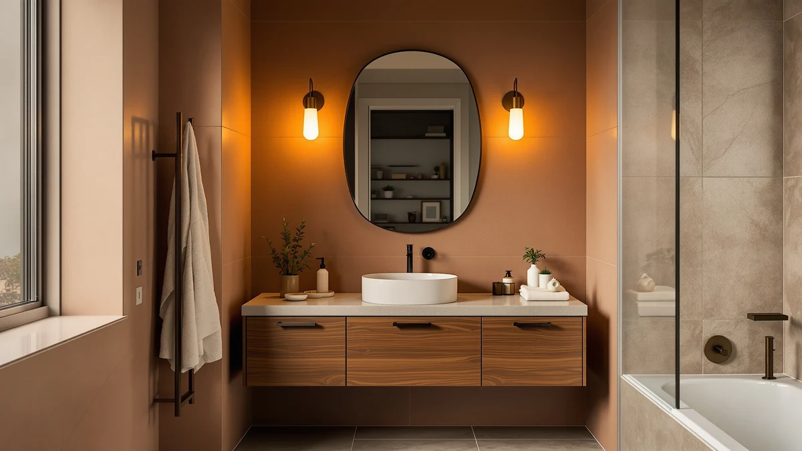

Quick Answer
After comparing seven small vanity tops ranging from 24 to 48 inches on material, price and verified owner reviews, the IRONCK Bathroom Vanity with Sink is our top pick among the best small vanity tops, priced at $161.99, the lowest price in this entire comparison. If you need a narrower footprint closer to 24 inches, the LIKIMIO 24" Bathroom Vanity below is the closest match and still costs under $210.
Our pick: IRONCK Bathroom Vanity with Sink, $161.99 Check Price on Amazon
Things to Know Before You Buy
- "Small vanity top" covers a range of widths. The seven combinations we compared run from 24 to 48 inches, so the best small vanity tops for a half bath and a small primary bathroom aren't the same width. Check our sizing guide before you commit to one footprint.
- MDF and engineered wood dominate this price range. All seven vanities in this guide use an MDF or engineered-wood cabinet and top, which keeps prices down but means standing water near the seams should be wiped up quickly.
- Price spans $161.99 to $429.80 in this comparison, and the gap mostly tracks whether a sink ships bundled with the top and how wide the cabinet runs, not brand markup alone.
- Two picks land at exactly 24 inches, the chartustriable and the LIKIMIO 24-inch vanity, so if your rough-in is tight, start with those two before considering anything wider.
- Shipping damage is a recurring complaint in owner reviews across this price range, so inspect the top and basin for cracks as soon as the box arrives, before you install anything.
The best small vanity tops solve a specific problem: fitting real counter space and a working sink into a bathroom that doesn't have inches to spare. We compared seven vanity-and-top combinations ranging from 24 to 48 inches on material, listed dimensions, price and verified owner reviews, and the IRONCK Bathroom Vanity with Sink came out on top at $161.99, the lowest price in this entire lineup. If you need something closer to a true 24-inch footprint, the LIKIMIO 24" Bathroom Vanity with Sink further down costs only about $46 more and trims six inches off the width.
Most of the seven options here fall in the 24-to-36-inch range that fits a typical powder room or guest bath, though we also included a 48-inch pick for readers who assumed they needed a small vanity top but actually have more wall space to work with. Every cabinet in this guide is built from MDF or engineered wood, which holds prices between $161.99 and $429.80, and it also means the usual caution around standing water near the seams and base applies across the board.
This guide covers what to check before buying a small vanity top, how we picked and compared these seven listings, and where each one earns its price or comes up short. A comparison table further down lets you scan material, price and best-use case side by side before you click through to Amazon.
Why You Should Trust Us
Ilane Tall covers home and bath products for Best Bathroom Vanities, where she researches vanity tops, cabinets and bathroom remodel gear for a US audience. For this guide to the best small vanity tops, she and the editorial team compared publicly listed specifications, pricing and verified buyer reviews for seven vanity-and-top combinations rather than relying on manufacturer marketing copy. We do not run a fake testing lab or claim to have installed any of these vanities ourselves. Instead, we cross-reference dimensions, materials and owner feedback so you can decide which small vanity top fits your bathroom before you buy.
How We Picked
To build this list of the best small vanity tops, we started by pulling every vanity-and-top combination in our product database at 24 to 36 inches wide, then added a 48-inch option for readers who end up sizing up once they measure their actual wall space. We narrowed the list to listings with documented dimensions, materials and pricing, and we cut entries with vague or missing spec sheets that made an honest comparison impossible. We also prioritized a spread of budgets, from the $161.99 IRONCK to the $429.80 Bellemave, so this guide works whether you're refreshing a rental bathroom or planning a full remodel.
How We Compared
We are a research-based review site, so we compared these seven small vanity tops using the specifications, pricing and verified owner reviews published for each listing rather than installing units ourselves. We lined up material, stated dimensions and price side by side to see where each top earns its cost, and we read through available owner feedback to flag recurring comments about assembly, shipping condition and finish quality. When a complaint shows up repeatedly, like a top that arrives chipped or a cabinet that ships without matching hardware, we call it out in that pick's drawbacks below. That is the standard behind every comparison in this guide to the best small vanity tops: published specifications plus a pattern in owner feedback, not a physical impression of the product.
Our Picks

IRONCK Bathroom Vanity with Sink
What we like
- At $161.99, it is the least expensive vanity-and-sink combination in this entire comparison
- Ships with the sink already included, so there's no separate basin to source or match
- 30-inch width and 19.6-inch depth fit a standard small-bathroom footprint without crowding the door
Flaws but not dealbreakers
- MDF and engineered-wood construction means standing water near the seams should be wiped up promptly
- At 38 inches tall, it runs several inches higher than some of the other picks here, so measure clearance under any existing mirror or medicine cabinet first
| Material | MDF / engineered wood |
| Size | 30 x 19.6 x 38 inches |
The IRONCK Bathroom Vanity with Sink is our top pick among the best small vanity tops, and the reason is straightforward: at $161.99 it is the least expensive complete vanity-and-sink combination in this comparison, undercutting every other option by at least $45. Its 30-by-19.6-by-38-inch footprint fits the kind of half bath or guest bathroom where a few extra inches of depth would crowd the door or toilet, and the sink ships already matched to the top, so you're not left sourcing a separate basin.
Like every other vanity in this guide, the cabinet and top are built from MDF or engineered wood, which keeps the price down but means the same moisture caution applies: wipe up standing water near the seams and base before it has a chance to soak in. For most readers comparing small vanity tops on price alone, this is the pick that sets the floor for the entire lineup.

LIKIMIO 36" Bathroom Vanity with
What we like
- 36-inch width has meaningfully more counter and storage than the 24- and 28-inch picks in this guide
- At $259.99, it costs less than the chartustriable and NicBex picks despite offering more width
- 18.3-inch depth is documented precisely, useful for confirming fit against a tight rough-in
Flaws but not dealbreakers
- 36 inches puts it well beyond a true "small" footprint, so measure your wall space before assuming this size still counts as compact
- Product title is truncated in our data ("Bathroom Vanity with"), so confirm exact sink and hardware configuration on the current Amazon listing before ordering
| Material | MDF / engineered wood |
| Size | 36" W × 18.3" D × 34" H |
The LIKIMIO 36-inch Bathroom Vanity is the runner-up in this guide, and it earns that spot by offering real extra counter space without jumping to premium pricing. At $259.99, it costs less than the narrower chartustriable 24-inch and NicBex 28-inch picks below, despite delivering a wider 36-inch top and 18.3-inch depth.
This is the pick for a reader who started out searching for small vanity tops but has a little more wall space than a strict 24-to-28-inch footprint requires. The MDF and engineered-wood build matches the rest of this comparison, so the same care around standing water near the seams applies here as well.

chartustriable 24 Inch Bathroom Vanity
What we like
- Matches the LIKIMIO 24-inch pick on width, giving buyers two true 24-inch options to compare on style
- 24-inch footprint fits the same tight half baths and guest bathrooms as our top pick, at a similar overall size
- MDF and engineered-wood build keeps the price in line with the other budget-to-mid-range vanities in this guide
Flaws but not dealbreakers
- At $279.99, it costs about $72 more than the LIKIMIO 24-inch pick despite the matching width
- Listed dimensions are less detailed than some other picks here, so confirm exact depth and height on the current Amazon listing before ordering
| Material | MDF / engineered wood |
| Size | 24 Inch |
The chartustriable 24 Inch Bathroom Vanity gives shoppers a second true 24-inch option in this comparison, alongside the LIKIMIO 24-inch pick further down. At $279.99, it costs more than that alternative despite matching it on width, which turns the choice between the two into a matter of cabinet style and finish rather than footprint.
Like the rest of the vanities in this guide, it's built from MDF or engineered wood, so the usual moisture caution near the base and seams applies. Because the seller's listing doesn't break out depth and height with the same precision as some other picks here, it's worth double-checking those measurements against your rough-in before you order.

NicBex 28" Bathroom Vanity with
What we like
- 28-inch width fills the gap between the 24-inch and 30-inch picks in this comparison, for a rough-in that doesn't match either standard size
- The only vanity in this guide built to exactly 28 inches, so it's the default choice if that's your measurement
- MDF and engineered-wood cabinet matches the build standard used across the rest of this lineup
Flaws but not dealbreakers
- At $296.83, it isn't the cheapest vanity in this guide, the IRONCK top pick and LIKIMIO 24-inch pick both cost less
- Product title is truncated in our data ("Bathroom Vanity with"), so confirm exact sink configuration on the current listing before ordering
| Material | MDF / engineered wood |
| Size | 28 Inch |
The NicBex 28" Bathroom Vanity fills a specific gap in this comparison: it's the only listing built to exactly 28 inches, which matters if your bathroom's rough-in falls between the common 24-inch and 30-inch sizes. At $296.83, it isn't the lowest price in this guide, so shoppers focused purely on cost should look at the IRONCK or LIKIMIO 24-inch picks first.
Where this vanity earns its place is fit, not price. It's the option built specifically to a 28-inch width that doesn't match either a 24-inch or 30-inch listing elsewhere in this guide. The cabinet uses the same MDF and engineered-wood construction as the rest of the lineup, so treat standing water near the seams the same way you would with any other pick here.

LIKIMIO 24" Bathroom Vanity with
What we like
- At $207.56, it's the second-least-expensive vanity in this entire comparison, behind only our IRONCK top pick
- 24-inch width and 18.3-inch depth are documented precisely, useful for confirming fit against a tight rough-in
- Narrower footprint than the IRONCK pick, for a bathroom that needs to shave a few more inches off the width
Flaws but not dealbreakers
- Product title is truncated in our data ("Bathroom Vanity with"), so confirm exact sink and hardware configuration on the current Amazon listing before ordering
- MDF and engineered-wood build means the usual moisture caution near the seams and base still applies
| Material | MDF / engineered wood |
| Size | 18.3"D x 24"W x 34.3"H |
The LIKIMIO 24" Bathroom Vanity is the second-least-expensive option in this comparison, at $207.56, trailing only the IRONCK top pick. Its 24-inch width and 18.3-inch depth make it one of the narrowest small vanity tops in this guide, a useful data point if your bathroom needs every inch it can spare.
This pick makes sense for a reader who has already ruled out anything wider than 24 inches and wants to keep the price close to our IRONCK top pick without stepping up to the chartustriable alternative above. The cabinet and top use the same MDF and engineered-wood construction as the rest of this lineup, so the usual care around standing water applies here as well.

Bellemave 48" Bathroom Vanity with
What we like
- 48-inch width has far more counter and storage than any other pick in this comparison
- Useful reference point for readers who assumed they needed a small vanity top but measured more wall space than expected
- MDF and engineered-wood cabinet matches the material tier used on every other pick in this comparison
Flaws but not dealbreakers
- At $429.80, it's the most expensive vanity in this comparison by a wide margin, more than $130 above the next-priciest pick
- Product title is truncated in our data ("Bathroom Vanity with"), so confirm exact sink and hardware configuration on the current Amazon listing before ordering
| Material | MDF / engineered wood |
| Size | W48" |
The Bellemave 48" Bathroom Vanity is the outlier in this guide to the best small vanity tops, included specifically for readers who start out searching for a compact option but discover they have more wall space than they thought. At $429.80, it's also the most expensive pick here by more than $130, a gap that reflects the extra width rather than a premium material.
If your bathroom measures 48 inches or more, this is the pick that gives you the most counter and storage of anything in this comparison. But if you're still researching small vanity tops because your bathroom is actually tight, the 24-to-36-inch picks earlier in this guide are the better starting point.

LIKIMIO 30" Bathroom Vanity with
What we like
- 30-inch width splits the difference between the 24-inch and 36-inch picks in this guide
- At $269.99, it costs less than the chartustriable 24-inch and NicBex 28-inch picks despite the wider top
- 18.3-inch depth matches the LIKIMIO 36-inch runner-up, so the two share a consistent footprint beyond width
Flaws but not dealbreakers
- Costs more than our IRONCK top pick and the LIKIMIO 24-inch pick, both of which are narrower
- Product title is truncated in our data ("Bathroom Vanity with"), so confirm exact sink and hardware configuration on the current Amazon listing before ordering
| Material | MDF / engineered wood |
| Size | 30" W × 18.3" D × 34" H |
The LIKIMIO 30" Bathroom Vanity sits in the middle of this lineup on both width and price. At 30 inches, it splits the difference between the narrowest 24-inch picks and the 36-inch runner-up, and at $269.99 it costs less than either the chartustriable 24-inch or NicBex 28-inch options despite offering more counter space.
This is a practical pick for a reader who has measured a bathroom that's a little too tight for 36 inches but has more room than a strict 24-inch footprint requires. Like the LIKIMIO 36-inch runner-up, it shares an 18.3-inch depth, so the two vanities line up closely if you're weighing width against your available wall space.
Quick Comparison
| Product | Material | Price | Rating | Best for | Get it |
|---|---|---|---|---|---|
| IRONCK Bathroom Vanity with Sink | MDF / engineered wood | $161.99 | 4 | Lowest price overall | View on Amazon → |
| LIKIMIO 36" Bathroom Vanity with | MDF / engineered wood | $259.99 | 4 | More counter without premium pricing | View on Amazon → |
| chartustriable 24 Inch Bathroom Vanity | MDF / engineered wood | $279.99 | 4 | 24-inch alternative style | View on Amazon → |
| NicBex 28" Bathroom Vanity with | MDF / engineered wood | $296.83 | 4 | Exact 28-inch footprint | View on Amazon → |
| LIKIMIO 24" Bathroom Vanity with | MDF / engineered wood | $207.56 | 4 | 24-inch width near top-pick price | View on Amazon → |
| Bellemave 48" Bathroom Vanity with | MDF / engineered wood | $429.80 | 4 | Widest option, for bigger bathrooms | View on Amazon → |
| LIKIMIO 30" Bathroom Vanity with | MDF / engineered wood | $269.99 | 4 | 30-inch middle ground | View on Amazon → |
The Competition
Several vanity tops marketed as compact or space-saving didn't make our final list of the best small vanity tops. Listings without a documented material, dimension or price were out, since incomplete specifications make it impossible to compare fairly against the seven vanities above. Cabinet-only listings with no top or sink included didn't make the cut either, because that combination doesn't answer the question most readers researching small vanity tops are actually asking, and duplicate listings of the same vanity under different sellers got skipped too, since they offered no meaningful difference in material, dimensions or price from a product already represented here. If none of the seven picks above match your bathroom's exact rough-in, the wider and narrower alternatives in this guide cover most of the reasons you might size up or down. Across all seven, our research into the best small vanity tops still points most budget-conscious buyers toward the IRONCK Bathroom Vanity with Sink, with the LIKIMIO 24" pick as the closest runner-up on price.